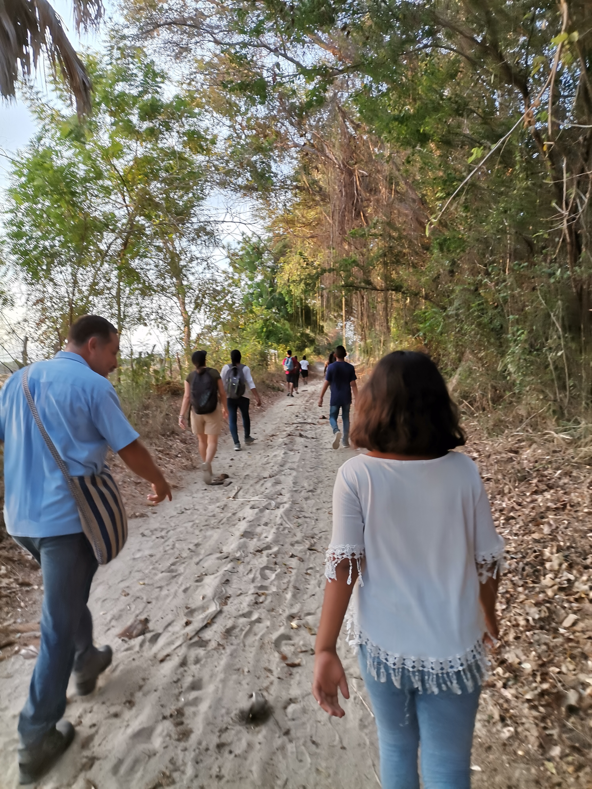

"El lugar donde Dios recibe tu fe y te entrega su amor"
-

Esta foto corresponde al día 12 de mayo cuando se realiza la feria del pueblo en honor a la llegada a la poblaciónla de la Virgen Santa María de Guadalupe, la patrona del pueblo. Las celebraciones eucarísticas comienzan desde el día primero y coinciden con el docenario.
-
12 de diciembre en honor a la Virgen de Guadulupe recordando su aparición a Juan Diego en el cerro del Tepeyac.
-
Año tras año se llevan a cabo celebraciones eucarísticas relacionadas con la cuaresma. Compartimos la fe de la preparació para la llegada de la Pascua.
-

En el cerro de la encomienda.Un lugar testigo de la fe del pueblo y de otras comunidades.
-
Semana Santa del año 2019 en la comunidad de Santiago Jocotepec.
-

El párroco Esaú y el párroco Armando terminando de hacer el altar del día de muertos.
-

De esta manera se prepara la iglesia para recibir el nuevo año liturgico. Para dar la bienvenida al adviento.
-
Navidad del 2018.
-

Primer domingo de adviento en el año 2020. Bendición de las Coronas de Adviento.
-

-

-
Rumbo a la encomienda para llevar a cabo la misa para pedir el agua.
-

-

-
- 
| EDAD | NIVEL | LIBRO |
|---|---|---|
| 7 años | Iniciación 1 | Despacito |
| 8 años | Iniciación 2 | Un paso al frente |
| 9-13 años | Eucaristía | Vengan a cenar conmigo |
| 13 años | Post-Eucaristía | También yo soy tu pueblo,Señor |
| 18 años | Confirmación | Yo les daré mi espíritu |
Los cursos son abiertos a cualquier persona que desee participar |
||
-

La catequesis es sinónimo de alegría, de enseñanza de fe y esperanza en compañía del Buen Pastor JESÚS.
-
Bautismos en el Templo Parroquial. Año 2019.
-

Jóvenes recibiendo el Sacramento de la Confirmación en la Comunidad de San Isidro Campechero.
-

Sacramento de la Confirmación en el Centro de Diocesáno de Pastoral.
-

Representaciones previas a navidad (Año 2018).
-

-
Requisitos, pláticas prebautismales y fechas de bautizos por mes (Año 2021).
-

Misa para pedir el agua, año 2019. En el río de la comunidad.
-
Misa ordinaria después de Hora Santa en Jueves.
-
Misa en el primer día del docenario a la Virgen de Guadalupe (01 de mayo de 2021).
-

Misa en el Cerro de la Cometa, en la comunidad de Santiago Jocotepec. (Año 2021).
-
En la Capilla de la Playa la Encomienda. Año 2019.
-

"No vamos a la Misa para dar nada a Dios, sino para recibir de Él aquello de lo que tenemos necesidad".
-PAPA FRANCISCO-
| DIRECTORIO | ||
|---|---|---|
| Teléfono | Dirección | Redes sociales |
| Cel.9541535912 | Col. Tepeyac. Rio Grande, Oaxaca,México | GMAIL: parriogrande18@gmail.com FACEBOOK: Parroquia Santa María de Guadalupe. |
| Cel.9545856113 | Col. Benito Juárez. Rio Grande, Oaxaca, México | Centro Diocesano de Pastoral |
HORARIOS DE LA OFICINA PARROQUIAL